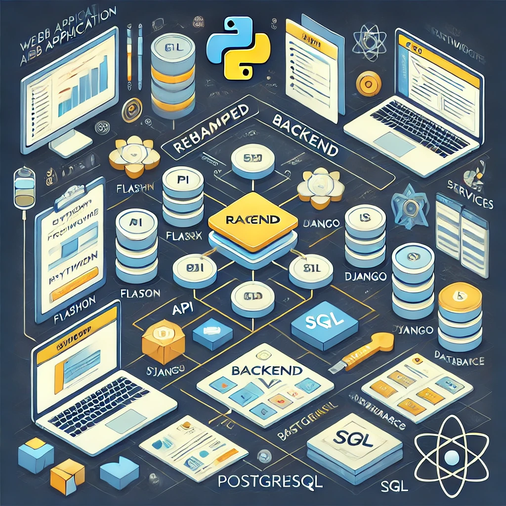
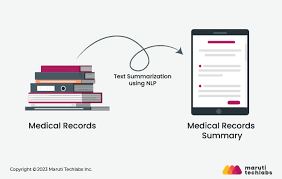

🚀 "Hello! I'm Sumedh .A. Sonawane, a Data Science enthusiast with a strong foundation in AI/ML, NLP, and medical imaging. Currently pursuing my M.S. in Applied Data Science at Indiana University, Indianapolis, I specialize in deep learning, AI-driven clinical decision support, and NLP for healthcare applications. I have experience working as a Research Assistant at Indiana University, where I contribute to AI-driven solutions, including medical image segmentation, clinical note summarization, and LLM-based chatbot development. Passionate about leveraging data science for real-world impact in healthcare and AI-driven applications, I am eager to collaborate on innovative projects!" 🚀.
Backend Revamp & Feature Enhancement for a Web Application (Confidential Project – The Polis Center at Indiana University)

- **Problem:** The application required a backend overhaul to improve performance, scalability, and functionality.
- **Solution:** Led the **backend revamp**, optimizing **system architecture, database queries, and API endpoints** to enhance efficiency and responsiveness.
- **Enhancements:** Added new functionalities to improve **user experience, data accessibility, and application interactivity**.
- **Impact:** Improved **system stability and performance**, ensuring **seamless integration** with existing services while maintaining compliance with security standards.

- **Problem:** Clinicians struggle with **lengthy patient histories (~10,000 characters)**, causing inefficiencies in decision-making.
- **Solution:** Built a **Streamlit-based application** utilizing a **fine-tuned T5 model** to generate short, actionable summaries (~150 characters).
- **Impact:** Reduced **review time by 40%**, achieving an **85% accuracy** compared to manual summaries in a **validation set of 500 records**.
- **Problem:** Inaccuracies in **brain tumor detection** from MRI data affect early diagnosis.
- **Solution:** Implemented **CNN-based deep learning model** for **tumor segmentation**.
- **Results:** Achieved **90% accuracy**, assisting radiologists in **faster and more precise diagnostics**.
This research paper discusses the development of a Smart Farm IoT system for agriculture, focusing on improving crop yield and disease prevention in the context of a growing global population, which is expected to reach 9.7 billion by 2050. The paper utilizes past data mining techniques to evaluate crop production and environmental changes. It employs a Convolutional Neural Network (CNN) framework to predict crop diseases and recommend suitable fertilizers based on climatic conditions (Temperature, Humidity, Rainfall). The system captures images of plant leaves to identify diseases, achieving an accuracy of 92%. Additionally, it provides information on nearby fertilizer shops, facilitating access to necessary resources. This research emphasizes the importance of modern technology, data analysis, and IoT in agriculture to meet the world's increasing food demand while enabling more informed decisions for farmers.
The paper "Improved Genetic Optimized Feature Selection for Online Sequential Extreme Learning Machine" introduces IG-OSELM, a novel approach to enhance the Online Sequential Extreme Learning Machine's (OS-ELM) performance with sequential clinical datasets. IG-OSELM employs genetic algorithms for efficient feature selection, addressing redundant and irrelevant features associated with Extreme Learning Machine (ELM) in sequential data. Using diverse clinical datasets like Pima Indian Diabetes and Statlog heart disease, experiments compare ELM, IG-ELM, OS-ELM, and IG-OSELM. Results reveal IG-ELM's significant improvement in classification accuracy and feature reduction, highlighting the efficacy of IG-OSELM. The study emphasizes the crucial role of optimal feature selection in boosting machine learning models' generalization performance, particularly for real-time applications with sequential input data.